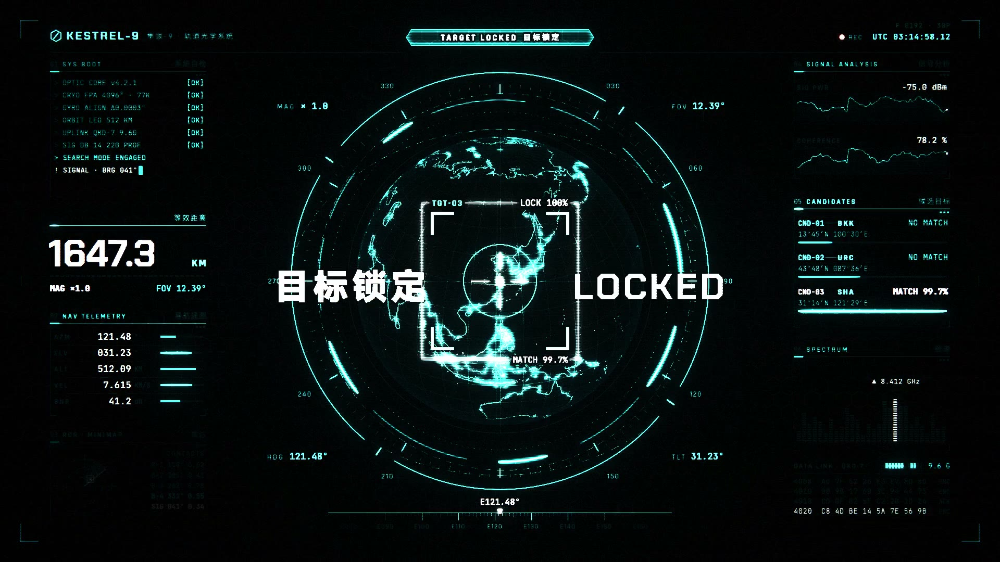
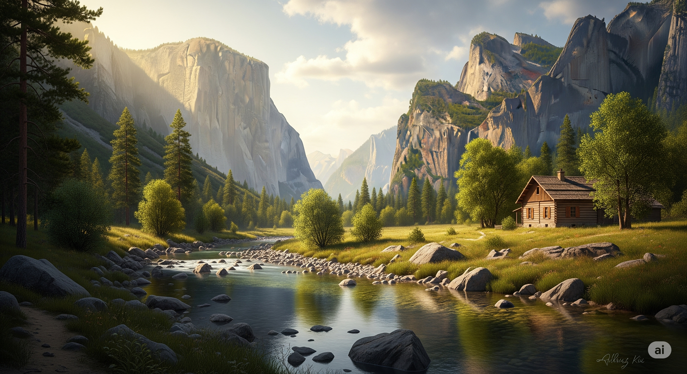
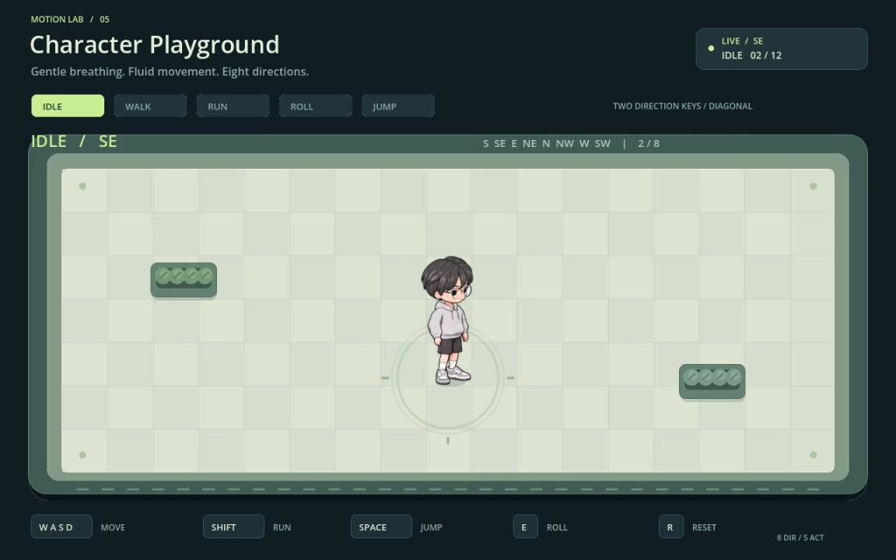
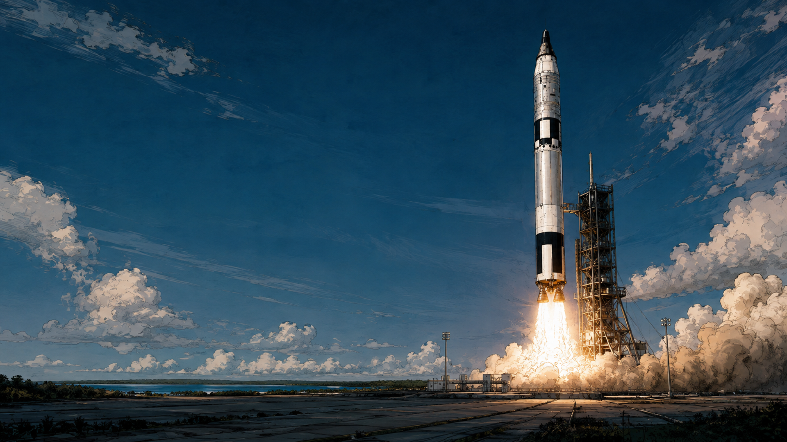
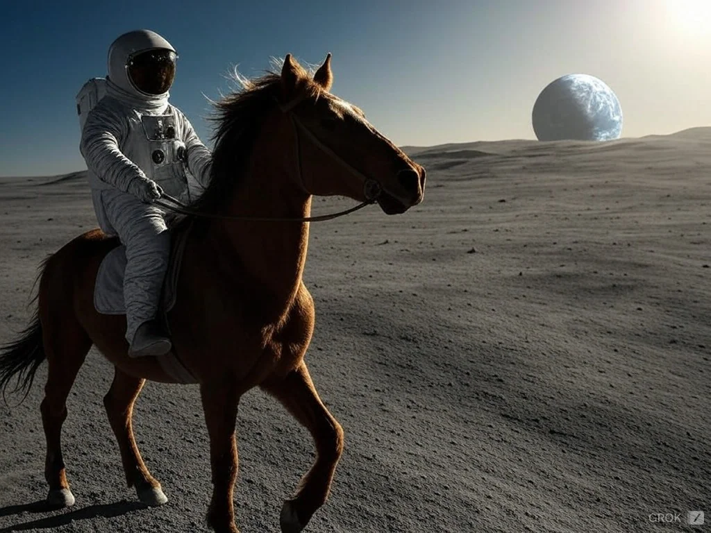

영상 프레임 · 정지 이미지 미리보기
ISOPOLIS · 자라나는 도시
빛나는 탑 주위로 파스텔톤 등각 투영 도시가 성장합니다. 풍력 발전기, 태양광 지붕과 고가 교통망이 어우러집니다.
출처가 공개한 8개 작품, 6개 모델 계열입니다. 추가 작품은 주요 목록 집계에 포함하지 않습니다. 정지 이미지 미리보기는 재생 확인이나 모델 성능의 증거가 아닙니다.
주요 목록 보기 (영어) →영상 프레임 · 정지 이미지 미리보기
빛나는 탑 주위로 파스텔톤 등각 투영 도시가 성장합니다. 풍력 발전기, 태양광 지붕과 고가 교통망이 어우러집니다.
영상 프레임 · 정지 이미지 미리보기

검은 바탕에 청록색을 사용한 가상의 인터페이스에서 지구본, 조준 고리, 신호 차트와 원격 측정 정보가 움직입니다.
생성 이미지 · 정지 이미지 미리보기

2025년 Gemini 앱으로 만든 풍경입니다. 출처 페이지는 Imagen 4.0이라고 하지만 업로드 요약에는 3.0이라고 되어 있어 정확한 버전은 불확실합니다. Gemini 4 Carbon의 결과물이 아닙니다.
게임 캐릭터 제작 과정 · 정지 이미지 미리보기

GPT 캐릭터 이미지를 Tripo AI와 Codex 지원 애니메이션 작업 과정을 통해 조작 가능한 Godot 캐릭터로 만들었습니다. 정확한 모델 버전은 명시되지 않았으며 여러 도구를 사용한 프로젝트입니다.
게임 일러스트 · 정지 이미지 미리보기

Dan Lee-Odinson의 지휘 아래 Codex (GPT-6 Astra)가 내장 Imagegen으로 제작한 게임 일러스트입니다. 이미지 모델은 명시되지 않았으며 게임 구현은 Claude가 담당합니다.
생성 이미지 · 정지 이미지 미리보기

VulcanSphere는 2024년 12월 Grok Aurora로 이 텍스트 기반 이미지를 생성했다고 밝혔습니다. Grok 4.7 코딩이나 동영상 예시가 아닙니다.
이미지 편집 · 정지 이미지 미리보기
Qwen-Image-2.1로 거리 사진을 눈 내리는 밤 풍경으로 편집했습니다. 출처가 밝힌 이미지 편집 벤치마크이며 Qwen4 코딩 데모가 아닙니다.
SVG 작품 · 정지 이미지 미리보기
출처가 공개한 DeepSeek V4.1 Flash SVG 벤치마크 결과이며 Flash 1017이 아닙니다. 원본 화면에서 발 아래쪽이 잘렸지만 왕관을 쓴 얼굴과 턱은 보입니다.